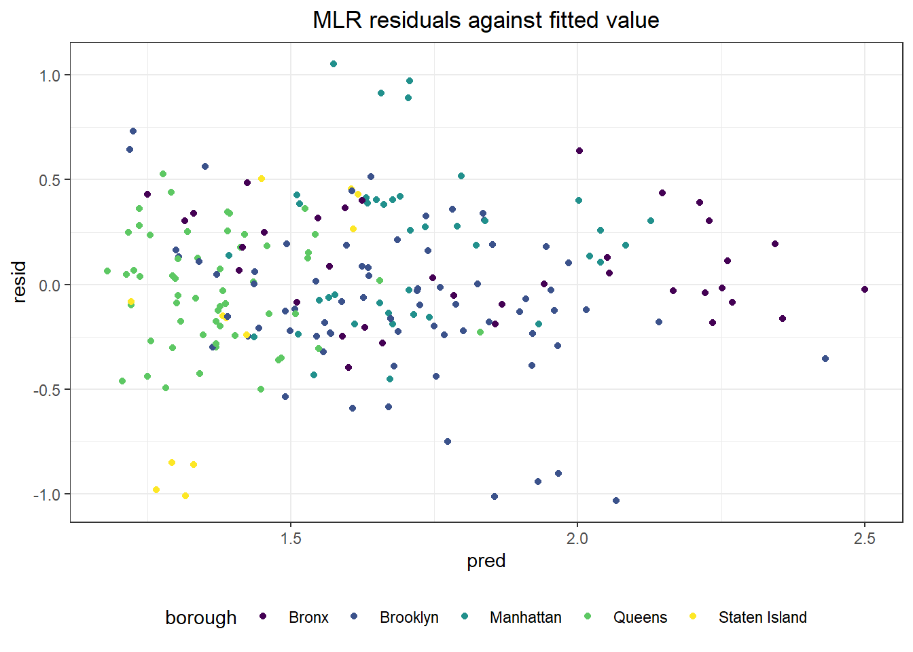
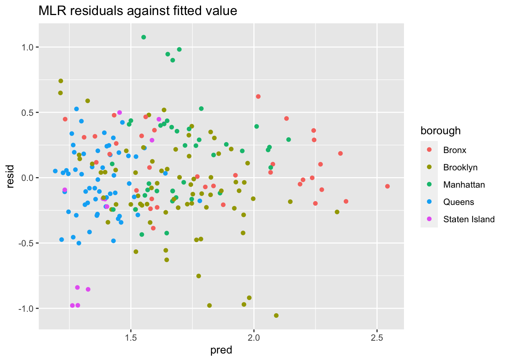
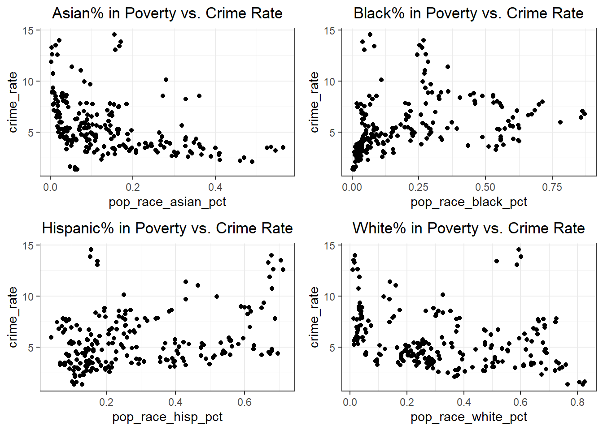

SES Analysis
We are interested in exploring whether socioeconomic factors are associated or can be used as predictors to assess crime rate. Since our NYPD complaint dataset only contains individual complaints, we utilized a socioeconomic indicator dataset (INSERT LINK: NYU Furman Center) to gather populational data for each borough and neighborhood.
To better conduct regression analysis, we have calculated the crime rate for each neighborhood as the following: Crime Rate = (Total number of complaints in a neighborhood in a given year / Total population in a neighborhood in a given year) * 100,000
#Reading in the dataset that map each precinct to a neighborhood, for further SES analysis
prec_neighbor = read_csv("data/nyc_prec_neighborhood.csv")#Merging `prec_neighboor` with NYPD dataset, conducting more data cleaning. The resulting `nypd_ses_df` only contains variables of interest for SES analysis. `nypd_ses_df` now contains neighboorhood information, as well as other necessary data from the original master data
nypd_ses_df = df_nypd |>
select(cmplnt_num, cmplnt_fr_dt, addr_pct_cd, crm_atpt_cptd_cd, law_cat_cd, susp_age_group, susp_race, susp_sex, vic_age_group, vic_race, vic_sex, ofns_desc, pd_desc) |>
rename(precinct = addr_pct_cd) |>
mutate(cmplnt_fr_dt = as.Date(cmplnt_fr_dt, format = "%m/%d/%Y"),
year = format(cmplnt_fr_dt, "%Y")) |>
left_join(prec_neighbor, by = "precinct")#Reading in the SES data for demographics information for each precinct/neighboorhood, and only keeping the relevant SES indicators. `neighbor_ses` df includes information on population, income, umemployment, poverty, education, and racial factors for every neighborhood.
neighbor_ses = readxl::read_excel("data/neighorhood_indicators.xlsx", sheet = "Data") |>
janitor::clean_names() |>
filter(region_type == "Sub-Borough Area") |>
rename(neighborhood = region_name) |>
select(neighborhood, year, pop_num, hh_inc_med_adj, pop16_unemp_pct, pop_edu_collp_pct, pop_edu_nohs_pct, pop_pov_pct, pop_race_asian_pct, pop_race_black_pct, pop_race_hisp_pct, pop_race_white_pct, pop_foreign_pct) |>
filter(year %in% c(2017, 2018, 2019, 2021)) #2020 and 2022 data missing
neighbor_rent = readxl::read_excel("data/neighorhood_indicators.xlsx", sheet = "Data") |>
janitor::clean_names() |>
filter(region_type == "Sub-Borough Area") |>
rename(neighborhood = region_name) |>
filter(year == "2017-2021") |>
select(neighborhood, gross_rent_0_1beds, gross_rent_2_3beds)# Now, calculate the crime rate for every precinct. Crime rate is calculated by dividing the number of crimes committed per neighborhood over the total population of that neighborhood, then times 100,000. Then merge the crime rate data with other relevant socioeconomic data. We focus only on the 2021 data. `ses_df` contains crime rate and other SES data per neighborhood, by year
ses_df = nypd_ses_df |>
group_by(year, borough, neighborhood) |>
summarise(crime_num = n())
ses_df = ses_df |> merge(neighbor_ses, by = c("year", "neighborhood")) |>
mutate(crime_rate = (crime_num/pop_num) * 100,000) |>
left_join(neighbor_rent, by = "neighborhood")Are crime rates associated with poverty, income, and educational level?
Visualizing potential association between poverty, income, and educational level with crime rate:
eda_plot1 = ses_df |> ggplot(aes(x = pop_pov_pct, y = crime_rate)) +
geom_point() +
geom_smooth(method = "lm", se = FALSE, color = "blue") +
labs(title = "Population in Poverty vs. Crime Rate")
eda_plot2 = ses_df |> ggplot(aes(x = hh_inc_med_adj, y = crime_rate)) +
geom_point() +
geom_smooth(method = "lm", se = FALSE, color = "blue") +
labs(title = "Median Household Income vs. Crime Rate")
eda_plot3 = ses_df |> ggplot(aes(x = pop16_unemp_pct, y = crime_rate)) +
geom_point() +
geom_smooth(method = "lm", se = FALSE, color = "blue") +
labs(title = "Population Unemployment Percentage vs. Crime Rate")
eda_plot4 = ses_df |> ggplot(aes(x = pop_edu_nohs_pct, y = crime_rate)) +
geom_point() +
geom_smooth(method = "lm", se = FALSE, color = "blue") +
labs(title = "Population with No High School Education vs. Crime Rate")
gridExtra::grid.arrange(
eda_plot1, eda_plot2, eda_plot3, eda_plot4, ncol = 2)It is observed that there is a stronger positive association between percentage of poverty population with crime rate; a weaker positive association between unemployment and lack of education with crime rate, and a negative association between median household income and crime rate.
We would like to fit a linear model to use these four SES indicators as predictors for crime rate outcome in a specific neighborhood.
Let’s first visualize the distribution of crime rate:
ses_df |> ggplot(aes(x = crime_rate)) +
geom_histogram(alpha = 0.8, color = "white") +
labs(
x = "Crime Rate" ,
y = "Count",
title = "Distribution of Crime Rate by Neighborhoods")
We can use Box-Cox Transformation to transform the data for linear fit
initial_fit = lm(crime_rate ~ pop_pov_pct + hh_inc_med_adj + pop16_unemp_pct + pop_edu_nohs_pct, data = ses_df)
MASS::boxcox(initial_fit)From the Box-Cox Transformation, log-transformation seems to be the best option. We will perform a log transformation on crime rate and use this as the predictor.
ses_df = ses_df |> mutate(
log_crime_rate = log(crime_rate)
)
log_fit = lm(log_crime_rate ~ pop_pov_pct + hh_inc_med_adj + pop16_unemp_pct + pop_edu_nohs_pct, data = ses_df)
broom::tidy(log_fit)## # A tibble: 5 × 5
## term estimate std.error statistic p.value
## <chr> <dbl> <dbl> <dbl> <dbl>
## 1 (Intercept) 0.421 0.203 2.07 3.94e- 2
## 2 pop_pov_pct 4.64 0.483 9.61 2.27e-18
## 3 hh_inc_med_adj 0.00000550 0.00000140 3.92 1.19e- 4
## 4 pop16_unemp_pct 0.560 0.749 0.748 4.55e- 1
## 5 pop_edu_nohs_pct -0.439 0.493 -0.890 3.74e- 1From the result of the MLR, it is observed that all 4 predictors are significant in terms of association with the crime rate outcome. We can run a regression diagnostic by plotting residuals for each borough:
ses_df |>
modelr::add_residuals(log_fit) |>
ggplot(aes(x = borough, y = resid)) + geom_violin() +
labs(title = "MLR residuals for each borough",
xlab = "Borough",
ylab = "Residuals")
We can further inspect our model by plotting residuals against fitted values
ses_df |>
modelr::add_residuals(log_fit) |>
modelr::add_predictions(log_fit) |>
ggplot(aes(x = pred, y = resid, color = borough)) + geom_point() +
labs(title = "MLR residuals against fitted value",
xlab = "Residuals",
ylab = "Fitted Values")
From the two diagnostics plots above, we can see that the residuals are roughly centered around zero, and are relatively normal. This would indicate that our model is a relatively good fit.
Visualizing trend: are crime rates associated with racial factors? (delete??)
eda_plot5 = ses_df |> ggplot(aes(x = pop_race_asian_pct, y = crime_rate)) +
geom_point() + labs(title = "Asian% in Poverty vs. Crime Rate")
eda_plot6 = ses_df |> ggplot(aes(x = pop_race_black_pct, y = crime_rate)) +
geom_point() + labs(title = "Black% in Poverty vs. Crime Rate")
eda_plot7 = ses_df |> ggplot(aes(x = pop_race_hisp_pct, y = crime_rate)) +
geom_point() + labs(title = "Hispanic% in Poverty vs. Crime Rate")
eda_plot8 = ses_df |> ggplot(aes(x = pop_race_white_pct, y = crime_rate)) +
geom_point() + labs(title = "White% in Poverty vs. Crime Rate")
gridExtra::grid.arrange(
eda_plot5, eda_plot6, eda_plot7, eda_plot8, ncol = 2)